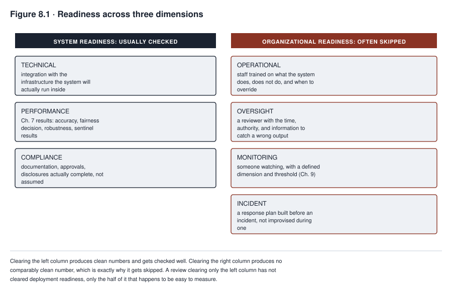
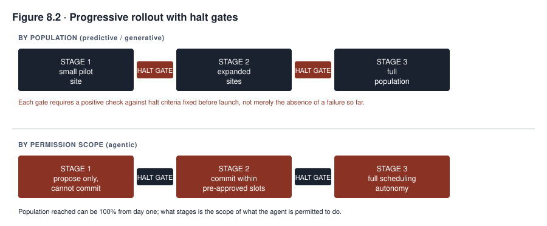

8. Deployment and Release
MEDASSIST passed every technical gate Chapter 7 would recognize as rigorous. Its performance metrics on held-out data from the academic medical center exceeded the threshold Northfield’s model risk function had set. Its fairness testing, run across the demographic categories the academic center’s own patient population contained, showed no disparity the review considered actionable. Its technical integration with the electronic health record was tested and stable. The deployment committee that reviewed the system before its rollout to Northfield’s community hospitals asked, at length, whether the model performed well. Nobody in the room asked, in those words, whether the six community hospitals receiving the system were the same kind of place the system had been built and tested on. The system was ready. The question that would have caught the gap was never on the agenda, because the agenda had been built around system readiness alone, and system readiness is not the only kind of readiness a deployment decision requires.
This chapter separates three questions that a rushed deployment process collapses into one. Is the system ready? Is the organization receiving it ready to operate it, to notice when it misbehaves, and to intervene when it does? And does the context it validated in still match the context it is about to run in? A system is usually ready for production before the organization around it is. Deploying anyway, because the technical checklist came back clean, is a recurring failure at this stage of a system’s life, one a deployment review can miss even when every question it did ask was answered honestly.
What you will be able to do
- Evaluate deployment readiness across three distinct dimensions, system readiness, organizational readiness, and context alignment, and explain why passing one does not imply the others
- Detect a mismatch between the context a system was validated in and the context it is about to be deployed into
- Design a progressive rollout with a blast radius and halt criteria fixed before launch, for both a user population and, for an agentic system, a permission scope
- Specify a rollback mechanism, including the case where actions already taken cannot simply be halted
8.1 System readiness
System readiness is the dimension every deployment process checks, and it has three parts of its own that a checklist naming only “testing complete” tends to blur together. Technical readiness asks whether the system integrates correctly with the infrastructure it will run inside, the electronic health record, the loan origination system, the applicant tracking system. Each of these has its own interface behavior that a model performing well in isolation can still fail against in practice. Performance readiness is the set of results Chapter 7 produces, accuracy against the appropriate metric, the fairness decision made and documented, robustness findings addressed, and, for a generative or agentic system, the evaluation and sentinel results specific to that class. Compliance readiness asks whether the documentation, approvals, and disclosures a specific deployment requires, from Chapter 2’s regulatory obligations and Chapter 3’s inventory record, are actually complete instead of merely assumed complete because the technical work is done. Each of the three has its own verification method. A deployment review that verifies only the second, because performance is the easiest of the three to produce a clean number for, has not verified system readiness at all. It has verified only the part of it that happened to be measured. These three are a floor, not a complete account of what “the system itself is ready” can mean. A fuller review also checks security and resilience against foreseeable attack and failure, privacy exposure the deployment newly creates, safe and fail-safe behavior when an input or dependency is malformed, supplier and supply-chain dependencies the system inherits, and a tested recovery path. None of that is guaranteed by “integration,” “Chapter 7 results,” or “documentation complete” alone.
8.2 Organizational readiness
Organizational readiness asks a harder question, and it is a question deployment reviews can skip without anyone deciding to skip it. That is because it is a question about the receiving organization, not about the system, and a review convened to approve a system tends to stay focused on the system. Operational readiness asks whether the staff who will work alongside the system have been trained on what it does, what it does not do, and what to do when it disagrees with their own judgment. Oversight readiness asks whether a human reviewing the system’s output has the time, the authority, and the actual information needed to catch a wrong output, a question Chapter 9 develops at length once automation bias is on the table. Monitoring readiness asks whether anyone is watching the system’s behavior in production at all, with a defined dimension to watch and a defined threshold that triggers a response. Incident readiness asks whether a response plan exists before an incident occurs, since Chapter 10 will show repeatedly that an organization improvising its first response during an actual incident makes worse decisions than one executing a plan built in advance.
These four are a minimum, not a complete model of what an organization needs before it is ready, and a review that stops at them has covered ground but not the whole of it. A fuller readiness check also names capacity and staffing, whether enough trained people actually exist to do the operational and oversight work, instead of only one person who happens to be available today. It names business continuity and a manual fallback, what the organization does when the system is unavailable, and support and escalation paths for the people using the system’s output. It names security operations and privacy operations specific to what this system newly exposes, and records and retention practices sufficient to reconstruct a decision later. It names a plan for communicating with the users or subjects of the system’s decisions, and affected-person rights and a recourse path for someone who wants to contest an outcome. It names procurement and supplier readiness, where a vendor’s own support and change commitments are part of what “ready” depends on. It also names accessibility and a change-management process for updating the system without silently invalidating the readiness work already done. Each item on this expanded list needs a named owner, the evidence supporting a ready determination, and a capacity estimate where staffing is the question. It also needs an exercise or test where one applies, and a stated readiness result, rather than a checkbox marked complete because the topic was discussed.
State the pattern directly, because softening it invites exactly the deployment decision this chapter is trying to prevent. The system is usually ready before the organization is. A model can pass every performance and compliance gate this chapter’s first section describes while the nursing staff who will act on its output has received no training on what an alert threshold means. It can pass while nobody has been assigned to watch for a rising rate of overridden recommendations, and while no incident plan exists for the day the model is wrong in a way that matters. Deploying in that state is not a technical risk. It is an organizational one, and it is the one this chapter’s case in focus was built around.

Read Figure 8.1 as three gates that a single review has to clear separately, not as one list with items checked off in any order. Context alignment is its own independent gate, not a detail folded into the other two. The first gate, system readiness, is the one most deployment processes already check well, because it produces numbers, a performance figure, a test result, a compliance checkbox. The second, organizational readiness, produces a different form of evidence rather than a worse one. That evidence is staffing records, workload exercises, direct observation, and interviews, not a single clean score, and a review with no comparable number for it is not excused from running it. The third, context alignment, section 8.3 develops in full. The figure’s argument is that a review clearing only the first gate has not cleared deployment readiness, only the third of it that happens to be easiest to measure, and a release decision follows only once all three gates carry evidence.
8.3 Context alignment
A system validated in one context does not carry that validation automatically into a different one. The mechanism by which organizations discover this the hard way is almost always the same, scope creep. It happens where a system approved for a specific use case, a specific population, and a specific environment is extended to something adjacent that looked similar enough not to warrant a fresh review. MEDASSIST’s deployment to Northfield’s community hospitals was exactly this pattern, not a decision anyone framed as extending the system’s scope. It was instead a rollout that treated “the same hospital system” as the relevant unit of similarity, instead of the same patient population, the same equipment, and the same documentation practice. Chapter 5 has already established that those are the dimensions that actually determine whether a model’s learned pattern transfers.
Context alignment has four checkpoints. Use case alignment asks whether the task the system is now being asked to do matches the task it was validated on, not merely a plausible extension of it. Population alignment asks the representativeness question Chapter 5 raised, now as a deployment gate, not a data-governance concern in the abstract. Environment alignment asks whether the operational conditions, equipment, staffing, documentation practice, IT infrastructure, match what the system was tested against. Risk proportionality asks whether the deployment’s stakes match the level of scrutiny the system received, since a system validated for a low-stakes pilot and then deployed at full production scale without a fresh review has changed its risk profile without changing its evidence base. A deployment review that checks system readiness and organizational readiness but treats context alignment as implied by the first two has missed the specific failure that put MEDASSIST into a community hospital nobody had separately evaluated it against.
Naming the four checkpoints is not the same as having a way to act on what they find, and the missing piece is a context comparison record that turns the comparison into a decision. The record names the validated context and the proposed context side by side, and compares them across task, population, input process, equipment, workflow, incentives, human roles, stakes, law, and physical or operational environment. It then rates the materiality of each difference found, and states the evidence behind each rating. That comparison resolves into one of four dispositions. Equivalent means no material difference was found and the existing validation carries over. Mitigated and revalidated means a difference was found and closed through additional testing or a control before deployment. Restricted or piloted means the deployment proceeds only for a narrower scope or a limited trial while the difference is monitored. Not approved means the difference is material enough that deployment does not proceed in this context at all. Who approves a mismatch, and which disposition a given comparison result requires, has to be decided before the comparison is run, not negotiated after a difference has already been found and someone would rather not slow the launch down.
The same four checkpoints apply just as directly to a predictive system with no clinical setting at all. A credit model validated on applications originated through a bank’s branch network, and then extended to applications originated through a newly acquired online channel, has changed its population, since online applicants skew differently on income documentation and credit history than branch applicants. It has also changed its environment, since the data captured at the point of application differs by channel in ways that can silently degrade the model’s inputs. Treating “the same bank, the same product” as sufficient similarity is the credit-model version of the mistake MEDASSIST’s rollout made. It is caught by the same four checkpoints instead of by a channel-specific one, which is the point of stating them as general dimensions rather than as a clinical checklist that happens to generalize.
8.4 The deployment decision
A deployment review should conclude in one of four documented outcomes, each with a named person accountable for it, not in an implicit approval inferred from the absence of an objection. The record behind that outcome needs more than the outcome itself. It states the exact evidence version each finding was based on, the reviewing body’s quorum and authority to decide, and any conflicts of interest disclosed. It also records dissent noted instead of resolved by silent majority vote, the monitoring conditions the deployment will run under, and confirmation that rollback readiness has actually been checked rather than assumed. Finally, it names protections for the people affected by the system’s decisions, an expiry date on the approval itself, and the specific triggers that would reopen the review before that expiry.
Approved names the reviewer, the date, and the specific evidence the approval rests on, so that a later question about why the system was deployed has an answer more specific than the bare claim that it passed review. Approved with conditions is an outcome deployment reviews can reach for readily and then fail to honor. A condition that is not specific and is not tracked is not a condition at all. It is only a note that made the reviewers feel the concern had been addressed. A condition worth the name states exactly what must happen, by when, verified by whom, with a consequence specified for the condition not being met. It belongs in the same governance record Chapter 3 established for the system generally, checked on a schedule instead of filed and forgotten. FAIRLEND’s equal-opportunity decision from Chapter 7 is exactly the kind of finding that should attach as a tracked condition rather than a closed matter, but the condition has to be a safe one. It is not the per-group pricing adjustment Chapter 7 identified as its own source of fair-lending exposure requiring legal review. It looks instead like a scheduled revalidation of the decision rule, documented completion of that legal review, an added recourse path for declined applicants, or a restriction on where the model is used. Any such condition should be tracked with an owner and a date and verified by the model risk function against the engineering or policy backlog. Denied names the specific readiness gap that produced the denial and what would need to change to reopen the review, instead of a bare rejection that gives the requesting team nothing to act on. Deferred states explicitly what additional evidence or work is needed before the decision can be made at all. That distinguishes a deferral, a decision to wait for something specific, from an approval that quietly never got finished being reviewed.
8.5 Progressive rollout
A deployment decision to proceed is not a decision to expose the entire intended population on day one. Progressive rollout is the discipline of expanding exposure deliberately, with the criteria for each expansion decided before the rollout begins, instead of improvised once it is underway.
Blast radius is the size and consequence of what a failure could affect at the current stage of rollout. Staging a rollout means starting with a blast radius small enough that a failure is recoverable and costly lessons are cheap, then expanding only once the current stage has run long enough, and been watched closely enough, to justify the next one. Population and permission or capability are not a choice between two different systems’ rollout styles. They are two independent controls every system’s rollout needs, because a narrow action can still touch many people, expose sensitive data, create an unfair exclusion, or overload an operations team, regardless of how few users can currently reach it. A wide population exposed to only a narrow, low-consequence capability can be a safely staged rollout even on day one. Staging a rollout means choosing a deliberate position on both axes at once. One axis controls exposure, meaning the users, sites, transactions, populations, or traffic reached. The other controls capability, meaning the data, tools, actions, permissions, spend, or rate the system is allowed at that stage. Halt criteria have to be defined before launch on both axes, stated as specific, measurable conditions such as an error rate threshold, a specific category of complaint, or a specific volume of overrides. These triggers force an automatic pause instead of a judgment call under the pressure of a rollout in motion, because a team midway through a launch it wants to succeed is a poor judge of whether a concerning signal is serious enough to stop for. Each promotion from one stage to the next needs a fixed observation window or sample size, stated success criteria, adequate monitoring coverage, incident readiness, a rollback test, an owner’s approval, and no unresolved release blocker before it is granted. A halt sends the release to investigation, rollback, remediation, and retest, rather than a quiet pause that resumes once attention moves elsewhere.
TALENTSCREEN’s scheduling component, extended from a recommendation-only tool to one that books interviews autonomously, illustrates the capability axis clearly. It moves from a first stage that can propose times but not commit them, to a second stage that can commit within a narrow set of pre-approved time blocks, to a third stage with fuller autonomy. But that capability axis is staged alongside, not instead of, the population axis, how many candidates and recruiters the tool is exposed to at each stage. A capability-only staging plan that reaches every candidate on day one has not controlled the exposure a data-handling or fairness failure would have, even while genuinely controlling what actions the system can take.

Read Figure 8.2 as two independent axes staged together, not as a single track with an agentic exception branching off it. A stage that has produced no alarming signal is not automatically ready to expand on either axis. Each gate requires a positive check against the halt criteria set before launch, against a fixed observation window and stated success criteria. A rollout that expands on schedule regardless of what the current stage showed has turned a safety gate into a calendar entry. The point section 8.5 argues for is visible in the two axes together. A system given full population exposure on day one but restricted to a narrow, low-consequence capability is staged correctly on the capability axis while still carrying whatever exposure risk the population axis controls, and neither axis substitutes for the other.
8.6 Rollback
Rollback, treated as a single action, understates what recovering from a bad release actually requires, and the gap between “we can roll back” and “we can recover” is where an organization discovers, under pressure, that its plan covered less than it thought. A recovery plan, not a single rollback step, has to stop new harm first, and preserve evidence before anything is changed further, since an overwritten log or a reset state can destroy the record a later investigation needs. It has to decide between rolling back and fixing forward, since a forward fix is sometimes safer once new harm has been stopped. It has to restore a compatible combination of model, code, data, prompt, configuration, and dependencies together, since reverting one without the others can produce a combination that was never actually tested. It also has to reconcile pending and already-completed actions against the restored state, notify operators and, where required, affected people, and verify that the recovered service is actually working rather than assuming a successful rollback command means a working system. Finally, it has to monitor afterward for recurrence. None of this is worth much if the plan has never actually been exercised before the day it is needed. A plan that exists only on paper regularly turns out, once actually invoked under pressure, to depend on an assumption that quietly stopped being true months earlier. Recovery needs a technical mechanism, specific versions to return to across every layer above and a tested procedure for doing so, matching the version-control discipline Chapter 6 required for exactly this reason. It needs a clearly assigned authority. A named role must be empowered to trigger it without needing to convene the same committee that approved the original deployment. A process that requires the same lengthy approval as the original launch will arrive too late to limit the harm it exists to prevent. And it needs to have been tested as an exercise, not merely designed. The gap between a plan that looks complete on paper and one that actually works under real conditions is exactly the gap Chapter 10’s incident response discipline will show recurring across systems that treated an untested plan as an adequate one.
Reverting a model or application stops its future behavior. It does not undo a decision, a message, or a record change that behavior already produced. A predictive system’s denial already issued, or a generative system’s output already published or relied upon, needs the same reconciliation, notification, and remedy an agentic system’s committed actions do. Agentic systems make this harder, not unique to them, because one run can combine several tool calls, permissions, retries, and state changes before anyone intervenes. Reverting to a prior model version halts further actions, but it does not undo actions the system already took while running the version being rolled back. It does not resolve queued or duplicated actions still in flight, and it does not by itself address stale cached state or a client built against the version being removed. TALENTSCREEN’s scheduling component, if rolled back after committing a batch of interview times under a permission scope later found to be too broad, leaves those commitments in place unless recovery explicitly includes a compensating-action step. That step means canceling or reconfirming the affected appointments and addressing any resulting remedy owed to affected candidates, not just reverting the code path that produced the original commitments. A recovery plan for an agentic system that only halts further actions has handled just part of the problem. It also needs a kill switch, a manual fallback, and a way to reconcile and compensate for what already happened.
Case in focus: a deployment that passed every gate it was asked about
MEDASSIST · Hypothetical, following the running case
Northfield’s deployment committee for extending MEDASSIST to the community hospitals reviewed exactly the evidence its process asked for. That evidence included the model’s validated performance on the academic medical center’s data, its technical integration testing against each community hospital’s own instance of the electronic health record, and sign-off from the clinical informatics team that the alert interface displayed correctly on each site’s terminals. Every item on the committee’s checklist was genuinely, verifiably true. The checklist did not include a question about whether the community hospitals’ patient population, equipment, and documentation practice resembled the academic center’s closely enough for the model’s learned pattern to transfer, the representativeness question Chapter 5 develops in full. It also did not include a question about whether community hospital nursing staff, who had not been part of the model’s development or pilot, had been trained on what an alert threshold meant or what to do when their clinical judgment disagreed with it.
The deployment proceeded to all six community hospitals simultaneously instead of as a progressive rollout, because the committee’s approval was framed as a single decision covering the full extension. There was no blast-radius limitation and no halt criteria defined in advance beyond a general instruction to escalate “any concerning pattern,” a standard vague enough that nobody could point to a threshold being crossed even once the representativeness gap began producing late and missed alerts. When the pattern was eventually noticed, months later, through the monitoring process Chapter 9 describes rather than through anything this chapter’s readiness process had been built to catch, the organization had no progressive rollout to roll back to a smaller footprint from. It also had no rollback mechanism that had ever been tested, because nobody had built one, on the reasonable-sounding assumption that a model this thoroughly validated at the academic center was unlikely to need it.
Nothing in this sequence involved a reviewer failing to do their job. Every question the committee’s process asked, it answered correctly and honestly. The failure was in what the process asked about, system readiness, checked rigorously, and context alignment and organizational readiness, never named as separate questions at all. A deployment review built around this chapter’s three dimensions, instead of around system readiness alone, would have generated the representativeness question before the rollout rather than after the harm. It would also have had a progressive rollout and a tested rollback mechanism in place for exactly the situation Northfield eventually found itself managing without either.
Summary
Deployment readiness is not one question but three, and a review that answers only the first has not cleared a system for production, only confirmed that the system itself works. System readiness, technical, performance, and compliance, is the dimension deployment processes already check well. Organizational readiness, operational, oversight, monitoring, incident, and the broader minimum this chapter lists, is a dimension reviews can skip without anyone deciding to skip it. The pattern worth stating plainly is that a system is usually ready before the organization around it is, making deployment anyway a recurring failure at this stage.
Context alignment catches the specific mechanism, scope creep, by which a system validated for one use case, population, and environment gets extended to an adjacent one nobody separately evaluated. It is checked across use case, population, environment, and risk proportionality, through a context comparison record with a named disposition. The deployment decision itself should resolve into one of four documented, accountable outcomes, approved, approved with conditions specific and tracked enough to be real conditions, denied with the gap named, or deferred with the missing evidence specified. That outcome is recorded with the evidence version, authority, and dissent behind it. Progressive rollout stages exposure and capability as two independent axes for every system, agentic systems included, against halt criteria fixed before launch. Recovery needs a tested technical mechanism across every affected layer, a clear authority to trigger it, and, for an agentic system specifically, a compensating-action step that addresses actions already taken, not only halting further ones.
Evidence carried forward. This chapter’s output for the rest of the book is the release record. That record includes the exact versions and evidence bound into the decision, the conditions and their tracking status, the constraints and residual risks the deployment carries, the staged-rollout position, and the recovery plan. Chapter 9’s monitoring program is built to watch exactly these constraints, risks, and versions, not a generic list independent of what Chapter 8 actually decided.
Review questions
COMPREHENSION
Explain why a system can pass every test in Chapter 7 and still not be ready for deployment, using the distinction between system readiness and organizational readiness.
Define scope creep as this chapter uses the term, and explain why treating “the same organization” as the relevant unit of similarity is not sufficient for context alignment.
APPLIED
A team is preparing to extend a fraud-detection model, validated on transactions from one payment channel, to a second payment channel the organization considers similar. Using section 8.3’s four checkpoints, identify what would need to be verified before this counts as an aligned deployment instead of scope creep.
Design a halt criterion for a customer-support generative system’s progressive rollout, stated as a specific, measurable condition, not a general instruction to escalate concerning patterns.
SPOT THE RISK
- A deployment committee approves a system “with conditions” but the conditions listed are to “monitor closely” and “review performance regularly.” Identify what is missing from this approval and explain how you would rewrite it so the conditions are trackable.
COMPARE AND DECIDE
- An organization must decide between deploying a validated model to its full intended population immediately, capturing the benefit sooner, and staging the rollout, delaying full benefit but limiting blast radius. State what each choice costs and what you would need to know about the system’s risk profile to decide between them.
RUNNING CASE
MEDASSISTUsing the case in focus, identify the specific readiness question that was never asked, name who should have been responsible for asking it, and explain what a properly designed progressive rollout would have looked like for the community hospital extension.
A system deployed is a system now generating the evidence Chapter 9 needs to watch. The next chapter turns to operations and monitoring, and to the uncomfortable fact this chapter’s case in focus has already previewed. The failure MEDASSIST produced at the community hospitals was invisible to every readiness check this chapter describes and became visible only once someone was watching the system in production. That is a different discipline with its own methods, its own blind spots, and, for a system where the harm it prevents leaves no trace when prevention works, its own genuinely hard problem.